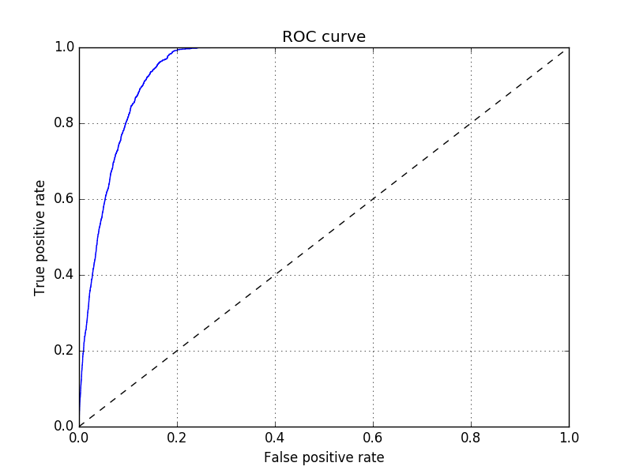

About the Export Predictor
Rationale
Acquiring productive capabilities in a wider range of goods is a key driver of economic growth and development. Countries typically diversify their economies as they pull out of poverty and only start to specialise (and innovate) at a relatively late stage of the development process — a pattern well documented in terms of production, employment and exports.
Developing countries must learn to produce and export new products, but economists do not agree whether industrial policy should conform to or defy comparative advantage. Many experts believe it is not possible to predict viable industries, or ‘pick winners’. Yet policy makers need to prioritise limited administrative capabilities. A prerequisite for a successful industrial policy is the identification of new industries that are (or can become) economically feasible — areas of ‘latent comparative advantage’.
So how can policy makers identify these sectors? Justin Lin's Growth Identification and Facilitation framework proposes a simple if ad-hoc approach, which is probably followed in some form by most countries:
The government in a developing country can identify the list of tradeable goods and services that have been produced for about 20 years in dynamically growing countries with similar endowment structures and a per capita income that is about 100% higher than their own.
Research into economic complexity may provide a more data-driven solution. Global trade data is mined to map out the network of possible exports and the paths of productive knowledge between then. Policy makers can then restrict their attention to industries that are close to their current productive structure but offer the opportunity to move into denser areas of the product space.
The Export Predictor applies the intuition of Lin's approach in a systemic manner inspired by the product space. Rather than measuring the distance between products, the focus is the proximity of countries. Economically feasible industries are identified based on the comparative advantage of ‘nearby’ countries. Multiple measures of country distance are combined in a machine learning model trained to predict export discoveries.
Data
The Export Predictor is built using international trade data from UN Comtrade. The data used covers the last 20 years, over 200 countries and more than 1,200 products. Data reported by the importing country is generally more reliable and used unless missing (in which case data reported by the exporter is used). Some products such as oil are excluded as they depend more on natural resource endowments than productive knowledge.
Country proximity
Distance between countries is measured along the following dimensions:
- Products exported (how similar countries are in terms of the products they export).
- Products imported (how similar countries are in terms of the products they import).
- Destination of exports (how similar countries are in terms the countries they export to).
- Origin of imports (how similar countries are in terms the countries they import from).
- Bilateral trade intensity (the value of trade between two countries, normalised by their share of global trade).
- Geographic distance (the number of kilometers between each capital city).
The networks of country proximity according to each measure are visualised here.
Export predictions
The objective is to predict ‘export discoveries’. To limit noise in the data, a country is considered to have discovered a new product after exporting it for three consecutive years. Likewise, only products not exported for three consecutive years are considered potential new discoveries.
Considering only completely new products will not generate useful predictions for industrialised and large emerging economies that already export most of the products in the database. The model is therefore separately trained to also predict new areas of comparative advantage. A country is said to have revealed comparative advantage if it's export share of a product exceeds that product's share in global trade. UN Comtrade data is used to identify all ‘discoveries’ over the last two decades according to both of these definitions.
The neighbours of each country (according to the proximity measures defined above) are ranked. The comparative advantage of each neighbour in each potential discovery is then computed. To increase predictive power and reduce computational requirements, the comparative advantage of all the neighbours is projected on to the most discriminative direction with respect to export discoveries in the previous year (using Linear Discriminants Analysis). The model also takes account of the past discovery rate for each country and product.
Finally, the XGBoost algorithm is trained to predict the probability of a given country discovering (or developing comparative advantage in) a given product. The discoveries predicted within the next three years can be explored here.
Model evaluation
The emergence of new export industries is relatively rare: the product discovery rate is around 3%. Developing a new comparative advantage is even rarer: the average discovery rate is less than 1%. The probability ranking across products or countries is as (or more) important than obtaining a correct binary classification (export discovery or not). In these situations, the receiver operating characteristic (ROC) curve is often used to evaluate a model’s predictions. This a plot of the true-positive rate against the false positive rate at different discrimination (probability) thresholds, after testing the model on new data.
For example, the ROC curve below was generated by training the model on data from 1996 to 2012 and evaluating its predictions against the actual product discoveries between 2013 and 2015. The potential new exports with a predicted probability of at least 3% include almost all of the true positives (products that were indeed discovered). However, almost 20% of these products were not discovered (were false positives). Using a higher threshold will eliminate most false positives, but at the cost of excluding products that were discovered.

The area under the ROC curve (AUC) provides a measure of the model’s
overall performance, or more specifically how well it ranks the
probabilities of potential exports. An AUC score of 0.5 indicates the model is no better
than a random guess, whereas the maximum score of 1 indicates no false positives
and no false negatives. When evaluated with the most recent data, the export
prediction model scores around 0.95 (see chart below). This means
that 95% of the time a randomly chosen product
that is discovered will have a higher predicted probability than
a randomly chosen product that is not. The model’s performance
continues to improve as more data becomes available, providing
assurance future predictions should be no less reliable. When trained
to predict comparative advantage the model scores even higher:
with an AUC score of 0.98.

Limitations and modifications
The Export Predictor was designed primarily for policy makers in developing countries. The predictions may not be useful for every country, particularly those close to the technological frontier that are more likely to discover new products through innovation than diffusion of existing knowledge.
The same approach could be used to predict other outcomes, including imports. Knowing which countries are most likely to import a particular product could help multinational companies plan their entry into new markets. The model may need to be re-trained using more disaggregated data, for example HS 6-digit level of classification rather than the 4-digit level currently used.